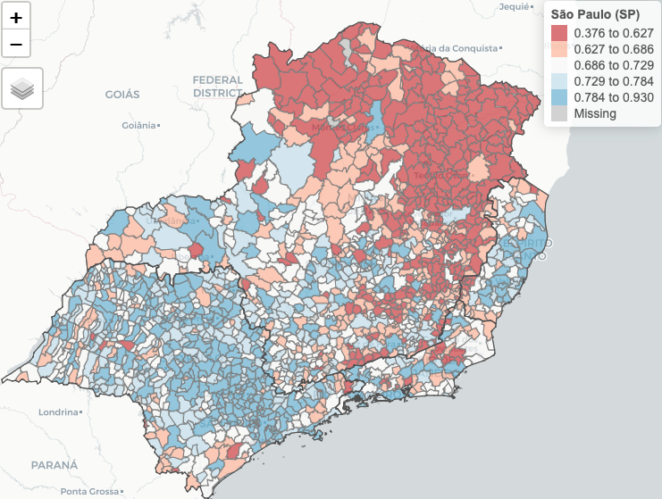

Sobre o aplicativo

Este aplicativo permite visualizar os dados do Índice Firjan de Desenvolvimento Municipal (IFDM) num dashboard. O IFDM tem metodologia similar ao popular Índice de Desenvolvimento Humano (IDH) da ONU; contudo, o IFDM abrange um número maior de variáveis. Além disso, o IFDM é calculado anualmente enqunto o IDH é calculado apenas uma vez a cada dez anos.
A interpretação do IFDM é bastante simples: quanto maior, melhor. O mapa interativo permite escolher uma cidade e compará-la com a realidade do seu estado. Também é possível fazer uma comparação regional ou nacional, alterando o campo ‘Comparação Geográfica’, mas note que isto pode levar algum tempo para carregar. Os quatro gráficos que aparecem abaixo do mapa ajudam a contextualizar a cidade.
A lista de cidades está ordenada pelo tamanho da população, então as principais cidades tem maior destaque. O dashboard também mostra a evolução dos indicadores de desenvolvimento humano ao longo do tempo. Nesta comparação fica evidente o impacto da Crise de 2014-16.
Um caso interessante que surgiu nos dados foi Porto Alegre. Em geral, a capital do estado, e a sua região metropolitana concentram cidades com os maiores níveis de desenvolvimento humano do seu respectivo estado. Isto não vale para a Região Metropolitana de Porto Alegre; as cidades com os melhores indicadores de desenvolvimento humano no RS estão concentrados na “Serra Gaúcha”, no entorno de Caxias do Sul e Bento Gonçalves.
Outro caso interessante é de Belo Horizonte e do estado de Minas Gerais como um todo. Em Minas Gerais há cidades com alto padrão de desenvolvimento como Uberlândia e Uberaba e cidade com baixíssimo desenvolvimento como Minas Novas e Santa Helena de Minas.
Este aplicativo foi construído no R usando {shiny} e {shinydashboardplus}
Para acessar o código do aplicativo confira o repositório no GitHub.